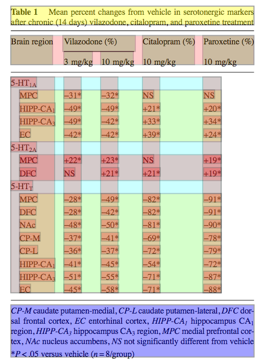

Introduction
Note on Strategy
This paper reports on progress in extracting semantic data from tables in PDF documents, especially in the biomedical sciences. We have written a general, heuristic approach which covers a range of tables and which we believe will perform well against the gridded tables in the ESWC2017 challenge. If this paper is accepted we will tune the tools for EWSC-like tables (mainly explicitly gridded) and submit a results paper before the Meeting.
All our work is carried out as Open Notebook Science (Bradley) where all parts of the process are visible to the world as it happens (e.g. daily or better commits). We also believe in Collaborative Science, exemplified by the Human Genome project, GalaxyZoo, and OpenSourceMalaria. We will announce this project to the world and invite collaboration, with the aim to refining the heuristics (and, where appropriate, Machine Learning).
What is a Table?
To extract tables we need a target schema, but few of these have a semantic structure.Simple table
The simplest tables, as exemplified by the CSV (TSV) format, consist of the cartesian product of rows and columns, ideally with row and column labels.
|
<table> <tr> <th>Sample</th> <th>Age(yr)</th> <th>mass(g)</th> </tr> <tr> <td>A123</td> <td>23</td> <td>99</td> </tr> <tr> <td>A456</td> <td>33</td> <td>56</td> </tr> <tr> <td>A678</td> <td>34</td> <td>57</td> </tr> </table> |
(Note: It is marred by the typesetter's use of an undocumented font ("AdvPSMP13") where the symbol for μ is represented by "1".)
Complex table
Many scientific tables have more complex semantics, often implicit and only indicated by visual clues.| Original (screen shot) | AMI-annotation |
|---|---|
 |
 |
- split columns. Here the column semantics are tree-structured, with high-level column-names being split into tuples at each level.
This example shows a single split (Velazodone), but we have found up to 4 levels, with irregularity such as:
- subtables. Here there are 3 subtables with varying rows: (5-HT1A (4 rows), 5-HT2A (2 rows), 5-HTT (8 rows)).
PDF Documents
PDF documents have very little structure; simply character streams, graphicsPaths, and bitmaps, but no support for higher primitives such as words, phrases, lines, rectangles, etc. Table reconstruction therefore requires heuristics. Our process includes:
- normalization of character stream. Unfortunately many publishers use non-standard, undocumented, font-families. While the US-ASCII range(32-127) is normally correct, higher code points, especially maths, are frequently totally corrupted. Other problems include diacritics, ligatures, small caps, etc. TeX-based fonts and Mathematical PI can suffer from this. Many publishers (typesetters) have arcane fonts ("Adv"). AMI has conversion tables for the commonest. See Figure
- Sub and superscripts (figure 1). Sub- and super-scripts ("suscripts") are critical for STEM subjects but PDF can only represent them by different-sized characters offset in X and Y. Suscripts cause large problems in adding semantics to PDFs; in AMI we convert them to semantic form at an early stage and preserve them through the process.
- Indents. Authors (or typesetters) will indent cells to indicate (a) continuation os running text (b) subtables. There is no standard and much error.
- Subtables. Authors may break the body of the table into sub-sections. Sometimes these are completely new tables, sometimes they are subcategories of preceding information. Subtables are almost always implicit and may by indicated by (a) interleaved (bold) title rows (b) different backgrounds (c) nested boxes, etc. Again there are no explicit standards
- Scientific illiteracy. It is appallingly common that typsetters retype minus signs ("-") as em-dashes (U+2014, —) as in Figure . or create not-equals (U+2260, ≠) by overstriking "=" with "/". We are slowly developing heuristics to detect and correct these.